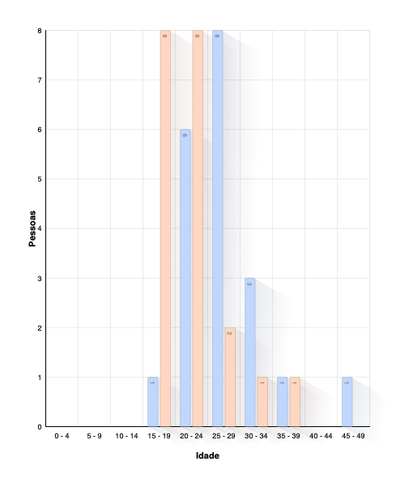
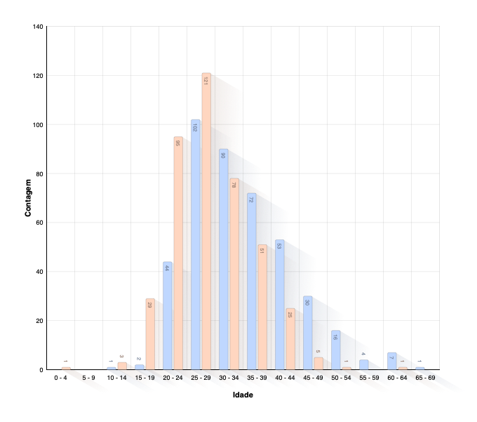
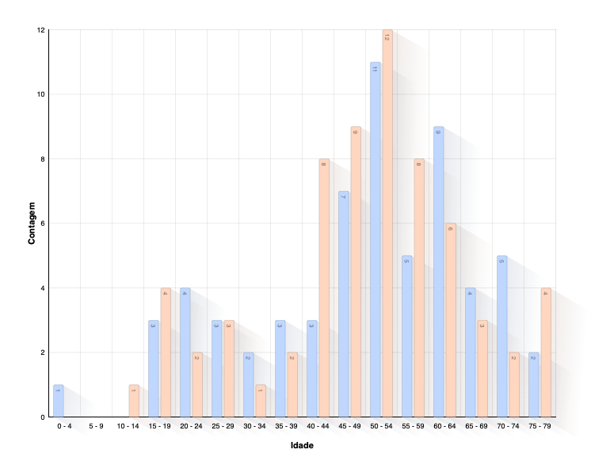
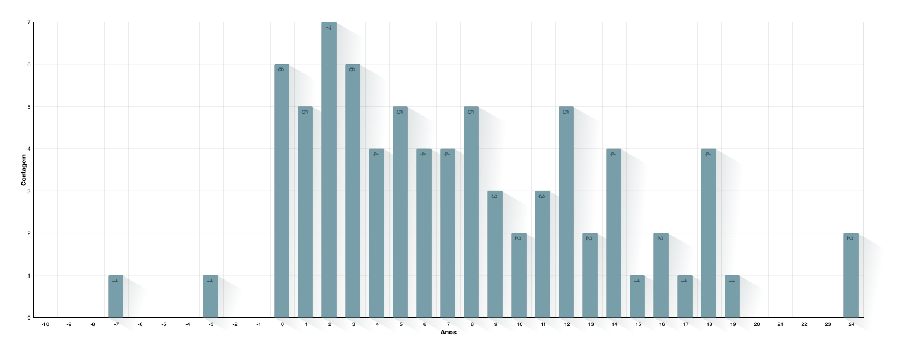
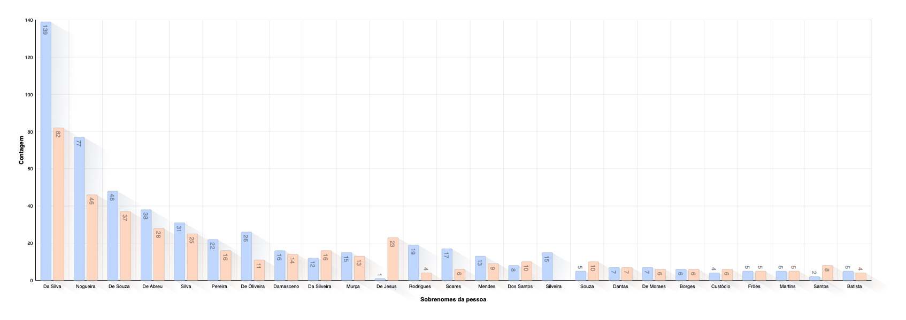
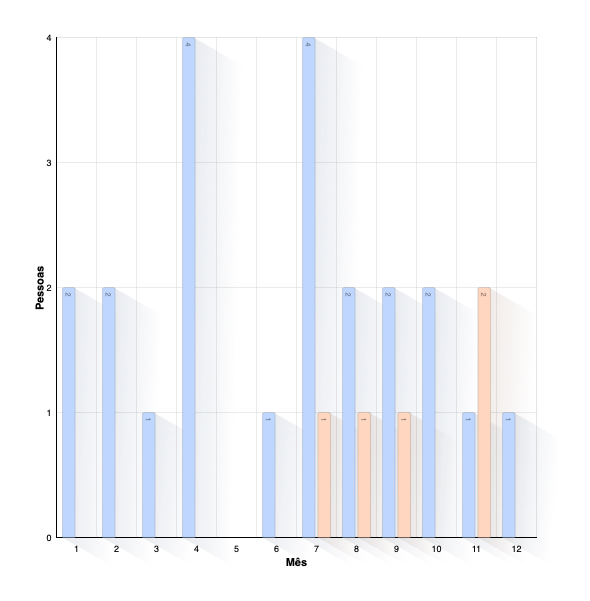
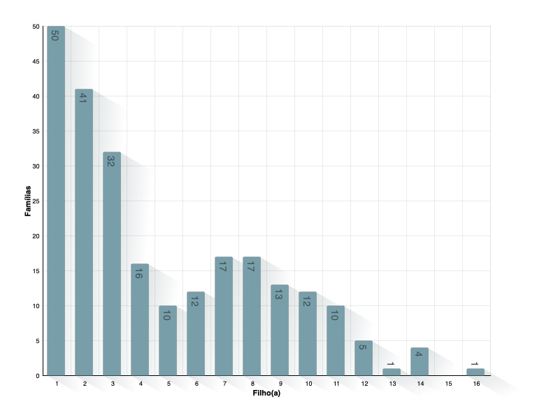
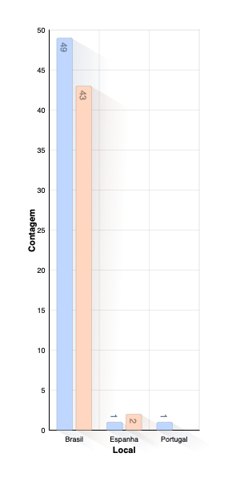

Árvore Genealógica
Pessoas
| Total de pessoas | 1247 |
| Homens | 678 |
| Mulheres | 569 |
| Pessoas com sexo desconhecido | 0 |
| Pessoas intersexo | 0 |
| Eventos pessoais | 611 |
Famílias
| Total de famílias | 268 |
| Famílias casadas | 6 |
| Famílias divorciadas | 3 |
| Eventos familiares | 10 |
Horário e Datas
| Data mais próxima | 1791 |
| Última data | 09/09/2023 |
Gráficos estatísticos
Idade ao falecer

Idade ao se batizar
Idade ao se casar

Idade dos pais no nascimento do filho(a)

Idade do filho(a) na morte dos pais

Idade da pessoa no falecimento do cônjuge
Tempo entre o casamento e o nascimento do filho(a)

Distribuição de sobrenome

Distribuição de nome
Ano de nascimento

Ano de batismo
Ano do falecimento
Mês de aniversário

Mês de falecimento

Mês do casamento

Filho(a) por família

Local de nascimento
País de nascimento

Local do batismo
País de batismo
Fatos: Origem étnica

Fatos: Cor da pele
Sexo